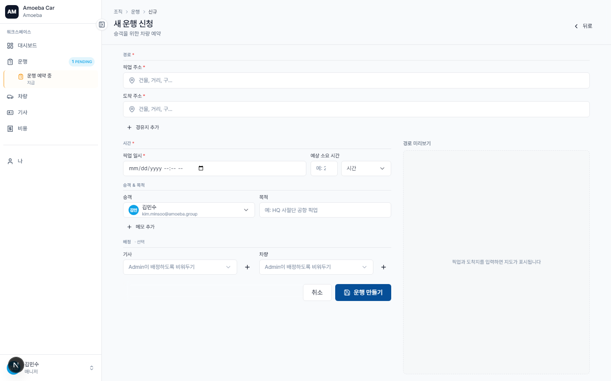
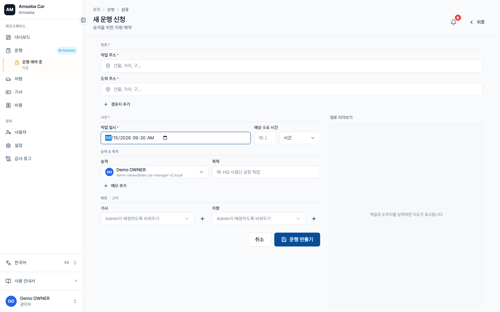

차량 예약 — 새 운행 만들기
한국어 번역 진행 중 — 이 페이지의 본문 일부는 아직 베트남어입니다. 제목·사이드바·이미지는 한국어로 제공되며, 본문 번역은 점진적으로 업데이트됩니다. 급한 경우 베트남어 원문을 참고하세요.
- URL
/trips/new- 필수
- 출발지, 도착지, 출발 시각
- 선택
- 승객 (mặc định = bạn), 기사, Xe, 목적, 경유지, 메모
- 자동 저장
- Hệ thống lưu nháp mỗi 5 giây — không sợ mất nếu reload
Mở form
Có 3 cách:
- Bấm nút lớn "+ Tạo 운행 mới" ở góc trên phải Dashboard
- Vào sidebar → 운행 → nút "+ Tạo mới"
- Truy cập trực tiếp
/trips/new

Các ô cần điền
출발지 (bắt buộc) — nhập địa chỉ. Ví dụ: Tòa nhà Bitexco, Quận 1. Hệ thống tự suggest nếu có cấu hình Google Maps API.
도착지 (bắt buộc) — tương tự 출발지.
출발 시각 (bắt buộc) — chọn ngày + giờ. Mặc định = hôm nay + 2 giờ.
승객 (tùy chọn) — mặc định là chính bạn. Đổi sang đồng nghiệp nếu đặt giúp.
기사 + Xe (tùy chọn) — nếu để trống, Admin sẽ gán sau. Nếu chọn ngay, hệ thống sẽ 알림 nếu trùng lịch.
목적 (tùy chọn nhưng rất khuyến nghị) — ngắn gọn, ví dụ: Họp đối tác Samsung Vietnam. 목적 này hiển thị trên báo cáo và audit log.
경유지 (tùy chọn, tối đa 10) — nếu 운행 cần ghé qua điểm trung gian. Mỗi 경유지 có tên + 메모.
Bấm "Tạo 운행" (nút xanh dưới cùng). 운행 tạo thành công và bạn được chuyển sang trang chi tiết.

Trạng thái 운행 sau khi tạo
| Nếu bạn... | 운행 chuyển ngay sang... |
|---|---|
| Không chọn 기사 | Chờ phân công — Admin phải gán driver/vehicle |
| Có chọn 기사 + xe | Chờ 기사 xác nhận — 기사 nhận thông báo |
Mẹo: Đặt sớm — đặc biệt nếu cần gấp. Hệ thống không 승인 ai cả, nhưng 기사 cần thời gian xác nhận và chuẩn bị xe.